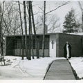

|  |
Byrne House Close
Built in 1865
Office of the current College President |
The Byrne House was built during the expansion of Marist College in 1963 to house the Dominicas Fathers who were, at that time, college chaplains. After fulfilling its use, and a few renovations later, in 1985 the house became the new location of the Counseling Center and Health Services to serve as a Personal Development Center. Combining these services allowed students to come together in one space, making it more convenient and worthwhile to visit.
A. J. Downing's The Architecture of Country Houses were employed at the carriage house. Downing states that the most efficient way to combine a barn and a stable/carriage house was to place the building in an area where the ground slopes to create a separate barn level at grade on one side of the building and a stable/carriage house at the higher grade on the other side of the building. The lower level was to be utilized as a root cellar and a barn for cows while the middle level or first floor was used to house horses and wagons. Hay and grain would be stored above the wagon area. Such a floor plan was designed for the early carriage house. When the Marist Brothers first occupied the site and the carriage house had wagon storage at the east end of the main floor and horse stalls at the west end; the access was through the north facade. The upper level was the hay loft and a blacksmith's shop occupied part of the cellar.
The house was named after Brother George Francis Byrne. Originally from Western, New York, Brother Byrne came to Marist in 1949 to teach History. He became a Marist Brother on July 26, 1926 and served until his death on October 25, 1953. He was buried in the Marist Brother's cemetery.